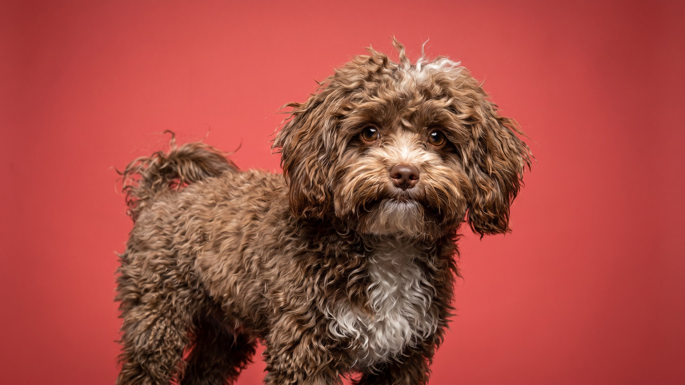

Среди отечественных декоративных пород русская цветная болонка остаётся одной из самых недооценённых: маленькая, кудрявая, почти не линяет, ладит с детьми и хорошо переносит квартирный формат. У этой породы есть одна черта, о которой честно предупреждают заводчики: она буквально следует за хозяином по пятам, и это нужно учитывать заранее.
🐾 Ваш питомец — русская цветная болонка?
Заведите профиль в AnimaLife: приложение запомнит породу, возраст и вес и будет подсказывать по уходу именно для неё. Вопросы AI-ветеринару — круглосуточно и бесплатно.
Завести профиль → Завести в MAX →
У вас iPhone? AnimaLife есть в App Store
Русская цветная болонка выводилась как собака-компаньон, и это видно в поведении. Порода хорошо ладит с детьми, мягко реагирует на гостей, редко проявляет агрессию. Зато одиночество переносит плохо: если оставлять собаку одну на 8–10 часов каждый день, со временем появляются тревожное поведение, постоянный лай, порча вещей.
Лучший вариант для этой породы: семья, где кто-то бывает дома большую часть дня, или хозяин с возможностью брать собаку с собой. Порода хорошо переносит поездки и смену обстановки, если рядом хозяин.
Шерсть болонки кудрявая или волнистая, мягкая, растёт в любом окрасе кроме белого (это закреплено в официальном стандарте породы). Почти не линяет, что делает породу более комфортной для квартиры.
Порода небольшая (обычно 2–4 кг) и не требует длинных пробежек. Двух прогулок по 20–30 минут в день хватает для физической нормы. Важнее общение и умственная нагрузка: болонки хорошо поддаются обучению, любят команды и трюки, быстро запоминают маршруты.
Для новичка порода подходит хорошо: послушна, мотивирована лакомством, не упряма. Важна последовательность в правилах: маленькая собака легко приучается к тому, что всё разрешено, и потом переучить сложнее.
🐾 У вас русская цветная болонка?
AnimaLife соберёт уход под породу: к каким болезням есть склонность, что проверять по возрасту, чем кормить и когда пора к врачу. Бесплатно, прямо в мессенджере.
Собрать план ухода → Собрать в MAX →
У вас iPhone? AnimaLife есть в App Store
🐾 Понравился разбор?
Подпишитесь на канал — каждый день разбираем по одному тревожному симптому у кошек и собак: что в пределах нормы, а когда пора к врачу. Подпишитесь, чтобы не пропустить разбор, который может спасти здоровье вашего питомца.
Материал носит информационный характер и не заменяет очную консультацию ветеринара.